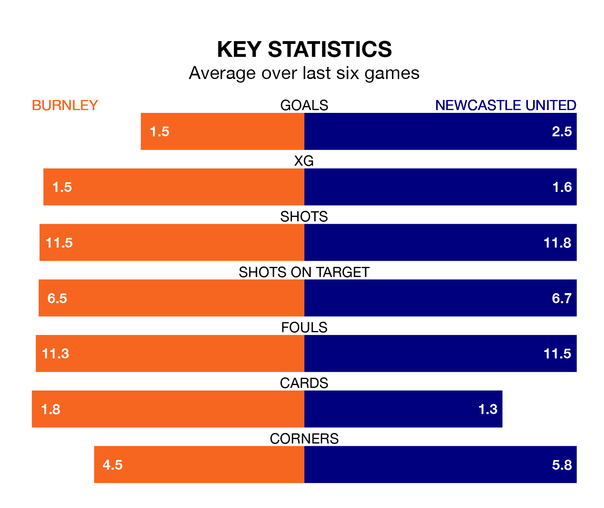

Newcastle United are strong favourites to take all three points despite Burnley's home advantage in Saturday's match at Turf Moor.
*Betting Company* are offering odds of 2.0 on Newcastle sealing the win, with the visitors sitting seventh in the Premier League table.
Burnley, who are 19th in the league and 29 points behind the Magpies, are priced at 3.3 to win. A draw is set at 3.75.
With 74 goals in 34 games so far this season, Newcastle are scoring more than average in the league with 2.2 goals per game. And they are conceding at an average rate, letting in 55 goals at a rate of 1.6 per game.
Burnley, meanwhile, are below average scorers, with 1.1 goals per game, compared to a league average of 1.6. They have conceded 2.0 goals per game.
In the last 10 years, Burnley and Newcastle have played each other on 14 occasions. Burnley won two of them, Newcastle seven, and they drew five times.
On average, the Clarets scored 0.8 goals and the Magpies 1.4 in those matches.
Their last meeting was on September 30, when Newcastle won 2-0 at home.
In Alexander Isak, United have one of the league's sharpest shooters so far this season. He has notched 19 goals in 26 appearances, to sit third in the scoring charts.
The Clarets's top scorers, with five goals each, are Jacob Bruun Larsen, Lyle Foster and Zeki Amdouni.
The hosts are in mixed form in the Premier League, with one win and four draws from their last six games.
With four wins and a draw over that period, the Magpies' form is much better – they have taken 13 points from 18, compared to Burnley's seven.
Burnley's last match was on April 27, a 1-1 draw against Manchester United, with Amdouni getting the goal for the Clarets.
Newcastle beat Sheffield United 5-1 last time out, also on April 27, with Isak (two), Ben Osborn (own goal), Bruno Guimarães and Callum Wilson on the scoresheet.
Updated: 10:44 (UTC), 30/04/24